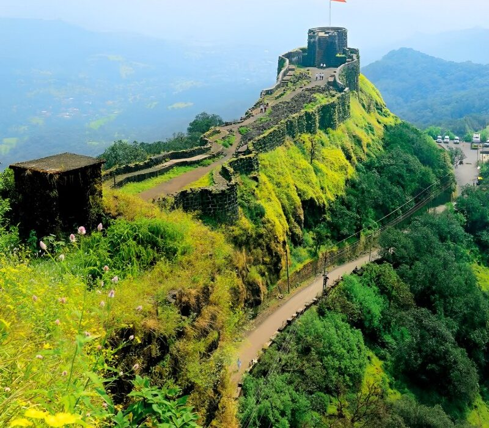
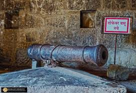
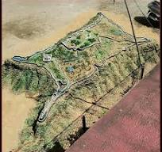

प्रतापगड किल्ला
Location : Click Here For Google Map
- माहिती
- प्रतापगड किल्ला महाराष्ट्र राज्यातील रायगड जिल्ह्यात स्थित एक ऐतिहासिक किल्ला आहे. हा किल्ला महत्त्वाचा समजला जातो कारण येथे छत्रपती शिवाजी महाराज यांनी १६५९ मध्ये अफझलखानला पराभव केला होता. किल्ल्याची वास्तुशास्त्र महत्त्वपूर्ण आहे आणि किल्ल्याचे संरक्षण त्याच्या मजबूत भिंती, गड, आणि पाण्याच्या टाक्यांनी होते. प्रतापगड किल्ला संपूर्ण सह्याद्री पर्वतरांगेच्या मधोमध असलेल्या एक अविस्मरणीय किल्ला आहे, ज्यावरून परिसराचे आणि घाट रांगेचे सुंदर दृश्य दिसते.
प्रतापगड किल्ला ऐतिहासिकदृष्ट्या खूप महत्त्वाचा आहे. किल्ल्याच्या परिसरातील बाग, त्याच्या पायर्या, आणि बुरुजांवरून त्याच्या शौर्याची गोडी मिळते. या किल्ल्याचा इतिहास छत्रपती शिवाजी महाराजांच्या काळातील अनेक लढाया आणि संघर्षांनी भरलेला आहे, ज्यामुळे तो स्थानिक लोकांसाठी एक पवित्र ठिकाण बनला आहे. किल्ल्याच्या शिखरावर पोहोचण्याची चढाई रोमांचक आहे, आणि येथे उभे राहून आपण किल्ल्याच्या आसपासच्या परिसराचे अद्वितीय दृश्य पाहू शकता.
आजकाल, प्रतापगड किल्ला एक महत्त्वाचे पर्यटक स्थळ बनले आहे, आणि त्याचा ऐतिहासिक महत्त्व पर्यटकांसाठी आकर्षण ठरते. किल्ल्याच्या संरक्षणासाठी आणि ऐतिहासिक महत्त्वासाठी प्रतापगड किल्ला अजूनही एक प्रख्यात स्थळ आहे.
Explore the historical beauty


